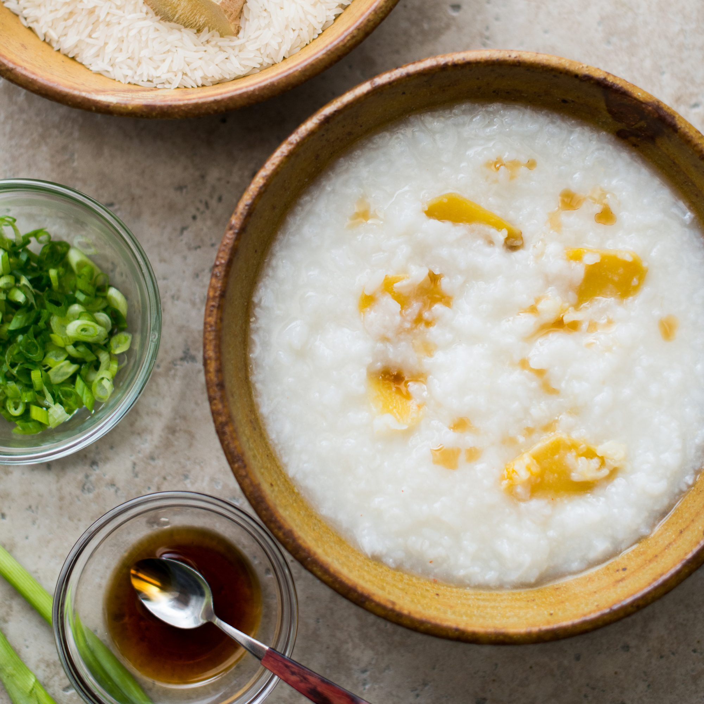

Chinese Porridge

Description
This is a basic recipe for making one of my favorite breakfasts: basic Chinese porridge. This dish is easy to make.
The recipe is taken from Food and Wine.
Ingredients
- 1 cup of raw long-grain white rice
- 7 cups of chicken or vegetable stock
- 1/2 teaspoon of kosher or sea salt
- One-inch knob of ginger
- Sliced green onion
- Sesame seed oil or soy sauce (optional)
Directions
- In a large pot, add in the stock, rice, salt, and ginger.
Bring the mixture to a boil, and then reduce the heat to a low simmer.
Stir ocassionally so that the rice doesn't clump or stick at the bottom.
- Simmer the congee for about 1 hour or until the congee is thickened and creamy.
Add salt to taste. Serve the congee hot.
- Add sliced green onion and optional sesame oil or soy sauce to tasete.